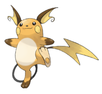

Raichu es la evolución de Pikachu. Es un Pokémon de tipo eléctrico introducido en la primera generación. Evoluciona de Pikachu cuando se expone a una Piedra Trueno. Raichu es conocido por su velocidad y su capacidad para almacenar electricidad en sus mejillas, que puede liberar en poderosos ataques eléctricos.
